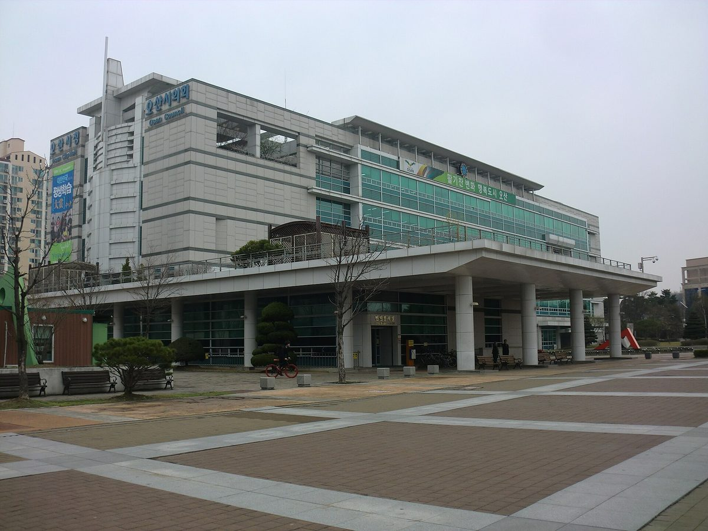

제주, 제2기 분산에너지 특구 신청 모델 3개 내놔…신례1리 100세대 이웃 간 전력 직거래, 함덕 임대주택 48세대 지붕 태양광 공유
같은 변전소 생활권 660만㎡ 안에서 한 해 발전량 70% 이상을 직접 쓰는 '커뮤니티 마이크로그리드형'…11월 5일까지 도민 의견 받아 신청, 지정 여부는 12월 결정


김승남 광주도시공사 사장, 영농형 태양광 이익 공유 이끌 독립 에너지공사 설립 촉구…전남개발공사 안 재생에너지 수익 비중 1.2% 들어
기고에서 '전남광주에너지공사' 조속 출범 주장…발전지구 기획·글로벌 기업 직접 전력구매계약 맡을 공공 사령탑 필요, 초기 재정자립도로만 판단 말아야

오산시, 공영주차장 4곳에 태양광 1,217kW 시 직접 운영 추진…판매수익 담을 기후대응기금 조례안 마련
삼미·은계·독산성동문·은빛개울공원 주차장 대상, 공공건축물로 넓힐 계획…에너지 조례 전부개정안엔 '시민참여형 에너지 사업 지원 강화' 담겨
- "공영주차장 태양광, 시민은 펀드 투자자 아닌 사업 주체로"…장시정 염전골햇빛발전협동조합 이사장, 인천 40MW 공공 SPC에 협동조합 참여 요구
- 나주호 수상태양광 9년 갈등, 찬성 측도 "처음 원한 건 주민참여형"…주민수용성 판단 기준은 여전히 비공개
- 행안부, 주한 외교사절 정책설명회에 사회연대경제 넣고 횡성 하대리 햇빛소득마을 방문 일정 잡아
- 화성 농산물산지유통센터 옥상에 299kW 시민발전소…시가 지붕 내주고 시민이 출자한 'RE빛 제4호' 준공
- 호주, 재생에너지·송전 개발사 등급제 공개 가동…첫 평가 5개사 중 3곳 공동체 참여 5성
- 스페인 우에스카 관개 공동체 5곳, 공동 회사 세워 태양광 관개 추진…산미겔 1,820kW 자가소비
정치 더보기 ›
이재명 대통령, 농어민과의 대화서 "태양광은 발전 사업" 농민 지적에 "외부업자 아닌 지역 주민에게 기회 줘야"
권혁정 전국마늘생산자협회 사무총장 "농지는 먹거리 생산에" 문제 제기…대통령은 "반론 안다"며 전력 수요 증가·방치 토지 활용 들어 답해
정책 더보기 ›
신한은행, 발전소 인근 주민 지분·채권 참여 자금 대는 1,700억 원 규모 주민수익공유펀드에 500억 원 투자
신한자산운용 조성, 주민이 주주·대주단으로 참여할 초기 투자금 조달 지원…금리·참여 한도·투자 대상 사업은 발표에 없어, 착공 전 개발 단계 겨냥한 3,000억 원 생산적금융펀드에도 2,000억 원
산업 더보기 ›
서울교통공사, 진접차량기지 옥상·주차장 4곳에 733.83kW 태양광 설치해 직접 사용…연 1억7,700만 원 절감 예상
부지를 민간에 빌려주던 방식 대신 공사가 생산 전력을 직접 쓰는 첫 차량기지 사례…연 83만5,000kWh 발전·온실가스 384톤 감축 예상, 시민 출자 없는 공공기관 직영 자가용 설비
사회 더보기 ›
나주호 수상태양광 9년 갈등, 찬성 측도 "처음 원한 건 주민참여형"…주민수용성 판단 기준은 여전히 비공개
반대 측 "사업 내용 물으니 설명회 때 말하겠다", 찬성 측 "지금은 기업 주도 사업"…주민 범위·대표·투표·배치안 모두 엇갈려, 전기위원회 보완 기한은 12월 초
지역 더보기 ›
제주, 제2기 분산에너지 특구 신청 모델 3개 내놔…신례1리 100세대 이웃 간 전력 직거래, 함덕 임대주택 48세대 지붕 태양광 공유
같은 변전소 생활권 660만㎡ 안에서 한 해 발전량 70% 이상을 직접 쓰는 '커뮤니티 마이크로그리드형'…11월 5일까지 도민 의견 받아 신청, 지정 여부는 12월 결정
오피니언 더보기 ›
김승남 광주도시공사 사장, 영농형 태양광 이익 공유 이끌 독립 에너지공사 설립 촉구…전남개발공사 안 재생에너지 수익 비중 1.2% 들어
기고에서 '전남광주에너지공사' 조속 출범 주장…발전지구 기획·글로벌 기업 직접 전력구매계약 맡을 공공 사령탑 필요, 초기 재정자립도로만 판단 말아야
시민에너지 더보기 ›
화성 농산물산지유통센터 옥상에 299kW 시민발전소…시가 지붕 내주고 시민이 출자한 'RE빛 제4호' 준공
화성시민재생에너지발전협동조합 "화성 첫 시유지 시민에너지발전소"…시장은 공공시설 옥상·주차장으로 시민참여형 태양광 확대, 조합은 장안면 석포6리 햇빛소득마을 추진
햇빛소득마을 더보기 ›
행안부, 주한 외교사절 정책설명회에 사회연대경제 넣고 횡성 하대리 햇빛소득마을 방문 일정 잡아
29~30일 강원 원주·횡성·홍천·춘천 일원, 재난안전 중심이던 소개 범위를 정책 전반으로 넓혀…하대리는 햇빛연금 협동조합 중심으로 주민 65가구 참여, 1,000kW 태양광 추진 계획
해외 더보기 ›
호주, 재생에너지·송전 개발사 등급제 공개 가동…첫 평가 5개사 중 3곳 공동체 참여 5성
에너지기반시설 위원, 7개 기준 독립 평가 결과 온라인 공개…5성 기준은 깊은 이익 공유와 공식 공동 의사결정, 20곳 넘게 평가 중이며 연방 용량투자제도 11차 입찰부터 참여 의무
済州道、第2期分散エネルギー特区の申請モデル3つを公表…新礼1里100世帯は近隣同士で電力を直接取引、咸徳の賃貸住宅48世帯は屋根上太陽光を共有
同じ変電所の生活圏660万㎡内で年間発電量の70%以上を直接消費する「コミュニティ・マイクログリッド型」…11月5日まで道民の意見を募って申請、指定の可否は12月に決定
光州都市公社のキム・スンナム社長、営農型太陽光の利益共有を担う独立エネルギー公社の設立を訴え…全南開発公社内の再エネ収益比率は1.2%と指摘
寄稿で「全南光州エネルギー公社」の早期発足を主張…発電地区の企画やグローバル企業との直接電力購入契約を担う公的司令塔が必要、初期の財政自立度だけで判断すべきでないと
烏山市、公営駐車場4カ所に太陽光1,217kWを市直営で推進…売電収益を積み立てる気候対応基金の条例案を用意
サンミ・ウンゲ・トクサンソン東門・ウンビッケウル公園の駐車場が対象、公共建築物へも拡大へ…エネルギー条例の全部改正案に「市民参加型エネルギー事業への支援強化」
- 「公営駐車場の太陽光、市民はファンドの投資家ではなく事業の主体に」…チャン・シジョン塩田谷太陽光発電協同組合理事長、仁川40MWの公共SPCへの協同組合参加を求める
- 羅州湖の水上太陽光、9年に及ぶ対立…賛成側も「最初に望んだのは住民参加型」、住民受容性の判断基準はなお非公開
- 韓国行政安全部、駐韓外交使節向け政策説明会に社会連帯経済を加え、横城・下大里の「日差し所得村」訪問を日程に
- 華城市の農産物産地流通センター屋上に299kWの市民発電所…市が屋根を提供し市民が出資した「REビッ第4号」が竣工
- 豪州、再エネ・送電事業者の格付け制度を公開稼働…初回評価5社のうち3社が地域参画で5つ星
- スペイン・ウエスカの灌漑共同体5団体、共同会社を設立し太陽光灌漑を推進…サン・ミゲルで1,820kWの自家消費
政治 もっと見る ›
イ・ジェミョン大統領、農漁民との対話で「太陽光は発電事業」との農民の指摘に「外部業者ではなく地域住民に機会を」
クォン・ヒョクチョン全国ニンニク生産者協会事務総長が「農地は食料生産に」と問題提起…大統領は「反論は承知」としつつ電力需要の増加と放置された土地の活用を挙げて答える
政策 もっと見る ›
新韓銀行、発電所周辺住民の持分・債券参加資金を賄う1,700億ウォン規模の住民収益共有ファンドに500億ウォン投資
新韓資産運用が組成、住民が株主・貸付団として参加するための初期投資資金の調達を支援…金利・参加上限・投資対象事業は発表になし、着工前の開発段階を狙う3,000億ウォンの生産的金融ファンドにも2,000億ウォン
産業 もっと見る ›
ソウル交通公社、榛接車両基地の屋上・駐車場4か所に733.83kWの太陽光を設置し自家消費…年1億7,700万ウォンの節減見込み
敷地を民間に貸していた方式に代わり、公社が発電した電力を直接使う初の車両基地の事例…年83万5,000kWhを発電し温室効果ガス384トンを削減する見込み、市民出資のない公共機関直営の自家用設備
社会 もっと見る ›
羅州湖の水上太陽光、9年に及ぶ対立…賛成側も「最初に望んだのは住民参加型」、住民受容性の判断基準はなお非公開
反対側「事業内容を尋ねると説明会で話すと」、賛成側「今は企業主導の事業」…住民の範囲・代表・投票・配置案のすべてで食い違い、電気委員会の補完期限は12月初め
地域 もっと見る ›
済州道、第2期分散エネルギー特区の申請モデル3つを公表…新礼1里100世帯は近隣同士で電力を直接取引、咸徳の賃貸住宅48世帯は屋根上太陽光を共有
同じ変電所の生活圏660万㎡内で年間発電量の70%以上を直接消費する「コミュニティ・マイクログリッド型」…11月5日まで道民の意見を募って申請、指定の可否は12月に決定
オピニオン もっと見る ›
光州都市公社のキム・スンナム社長、営農型太陽光の利益共有を担う独立エネルギー公社の設立を訴え…全南開発公社内の再エネ収益比率は1.2%と指摘
寄稿で「全南光州エネルギー公社」の早期発足を主張…発電地区の企画やグローバル企業との直接電力購入契約を担う公的司令塔が必要、初期の財政自立度だけで判断すべきでないと
市民エネルギー もっと見る ›
華城市の農産物産地流通センター屋上に299kWの市民発電所…市が屋根を提供し市民が出資した「REビッ第4号」が竣工
華城市民再生エネルギー発電協同組合「華城初の市有地市民エネルギー発電所」…市長は公共施設の屋上・駐車場で市民参加型太陽光を拡大、組合は長安面石浦6里の「ひなた所得村」を推進
太陽光所得村 もっと見る ›
韓国行政安全部、駐韓外交使節向け政策説明会に社会連帯経済を加え、横城・下大里の「日差し所得村」訪問を日程に
29～30日に江原道の原州・横城・洪川・春川一帯で開催、災害安全中心だった紹介範囲を政策全般に拡大…下大里は日差し年金協同組合を中心に住民65世帯が参加、1,000kWの太陽光を推進する計画
海外 もっと見る ›
豪州、再エネ・送電事業者の格付け制度を公開稼働…初回評価5社のうち3社が地域参画で5つ星
エネルギーインフラ・コミッショナーが7基準の独立評価結果をオンライン公開…5つ星の基準は深い利益共有と正式な共同意思決定、20社超が評価中で連邦容量投資制度の第11回入札から参加義務
韩国济州公布第二期分布式能源特区申请模式3种…新礼1里100户邻里直接交易电力，咸德租赁住宅48户共享屋顶光伏
在同一变电站生活圈660万平方米内就地消纳年发电量70%以上的"社区微电网型"…11月5日前征求道民意见后申请，是否获指定12月揭晓
韩国光州都市公社社长Kim Seung-nam呼吁设立独立能源公社主导农光互补收益共享…指出全南开发公社内可再生能源收益占比仅1.2%
在投稿中主张尽快成立"全南光州能源公社"…需要负责规划发电园区、与跨国企业直接签订购电协议的公共指挥部，不应只以初期财政自给率来判断
乌山市推进由市政府直接运营4处公营停车场1,217kW光伏…拟订把售电收益纳入气候应对基金的条例草案
对象为三美、恩溪、秃山城东门、银光溪公园停车场，计划扩大到公共建筑…能源条例全面修订案写入“加强支持市民参与型能源项目”
政治 更多 ›
韩国总统李在明在与农渔民对话中回应农民"光伏是发电事业"的指摘："应把机会给当地居民，而不是外来业者"
全国大蒜生产者协会事务总长Kwon Hyuk-jeong提出"农地应用于粮食生产"…总统表示"知道有反对意见"，并以电力需求增长和闲置土地利用作答
政策 更多 ›
新韩银行向1,700亿韩元规模居民收益共享基金投资500亿韩元，为发电站周边居民参与股权和债券筹措资金
由新韩资产运用设立，支持居民以股东或贷款团身份参与所需的初期投资资金…利率、参与上限和投资项目未在公告中披露，另向瞄准开工前开发阶段的3,000亿韩元生产性金融基金投入2,000亿韩元
产业 更多 ›
首尔交通公社在榛接车辆基地屋顶和停车场4处安装733.83kW光伏并自发自用…预计每年节省1.77亿韩元
不再把场地租给民间，而由公社直接使用所发电力，为其车辆基地首例…预计年发电83.5万kWh、减排温室气体384吨，属无市民出资的公共机构直营自用设施
社会 更多 ›
罗州湖水上光伏冲突已9年，赞成方也称“最初要的是居民参与型”…居民接受度判断标准仍未公开
反对方称“询问项目内容，只说到说明会再讲”，赞成方称“现在是企业主导项目”…居民范围、代表、投票、布置方案全都各执一词，电气委员会补充期限为12月初
地方 更多 ›
韩国济州公布第二期分布式能源特区申请模式3种…新礼1里100户邻里直接交易电力，咸德租赁住宅48户共享屋顶光伏
在同一变电站生活圈660万平方米内就地消纳年发电量70%以上的"社区微电网型"…11月5日前征求道民意见后申请，是否获指定12月揭晓
评论 更多 ›
韩国光州都市公社社长Kim Seung-nam呼吁设立独立能源公社主导农光互补收益共享…指出全南开发公社内可再生能源收益占比仅1.2%
在投稿中主张尽快成立"全南光州能源公社"…需要负责规划发电园区、与跨国企业直接签订购电协议的公共指挥部，不应只以初期财政自给率来判断
市民能源 更多 ›
华城农产品产地流通中心屋顶建成299kW市民发电站…市政府提供屋顶、市民出资的"RE光第4号"竣工
华城市民再生能源发电合作社称"华城首座市有地市民能源发电站"…市长表示将在公共设施屋顶和停车场扩大市民参与型光伏，合作社推进长安面石浦6里"阳光收入村"
阳光收入村 更多 ›
韩国行政安全部在驻韩外交使节政策说明会中加入社会连带经济，并安排参观横城下大里"阳光收入村"
29日至30日在江原道原州、横城、洪川、春川一带举行，介绍范围由灾害安全扩大到政策全领域……下大里以阳光年金合作社为中心，65户居民参与，计划推进1,000kW光伏
海外 更多 ›
澳大利亚可再生能源与输电开发商评级制度公开上线……首批5家中3家社区参与获五星
能源基础设施专员按7项标准独立评估并在线公开结果……五星标准为深度利益共享与正式共同决策，20多家正在评估中，联邦容量投资计划第11轮招标起强制参与
Jeju unveils three models for second-round distributed energy zone bid: 100 households in Sillye-1-ri to trade power with neighbours, 48 rental flats in Hamdeok to share rooftop solar
The "community microgrid" type requires at least 70% of annual output to be used within an area of up to 6.6 million square metres served by one substation; public comments run to 5 November, and a decision on designation is due in December
Gwangju Urban Corporation CEO Kim Seung-nam calls for an independent energy corporation to lead profit-sharing from agrivoltaics, citing a 1.2% renewables revenue share at Jeonnam Development Corporation
In a contributed column he urges the swift launch of a "Jeonnam-Gwangju Energy Corporation" as a public control tower to plan generation zones and sign direct power purchase agreements with global companies, saying it should not be judged on early financial self-sufficiency alone
Osan to run 1,217kW of solar on four public car parks itself and drafts ordinance for a climate fund to hold the power-sales revenue
Sammi, Eungye, Doksanseong East Gate and Eunbitgaeul Park car parks targeted, with public buildings to follow; overhaul of energy ordinance includes "stronger support for citizen-participation energy projects"
- "Citizens should own public car park solar, not just buy into a fund": Jang Si-jeong of Yeomjeongol Solar Cooperative calls for co-ops in Incheon's 40MW public SPC
- Nine years into the Naju Lake floating solar dispute, even supporters say "what we first asked for was resident participation"; criteria for judging local acceptance still undisclosed
- Korea's interior ministry adds the social and solidarity economy to its briefing for foreign diplomats, with a visit to a Hoengseong sunlight income village on the schedule
- Citizens' 299kW solar plant opens on Hwaseong produce centre roof as city lends the roof and residents put up the money for 'RE-bit No. 4'
- Australia launches public rating scheme for renewable and transmission developers, with three of the first five earning five stars for community engagement
- Five irrigation communities in Huesca, Spain, form joint company to run irrigation on solar power, with 1,820kW of self-consumption at San Miguel
Politics More ›
President Lee Jae-myung answers farmers' "solar is a power business" criticism: give the chance to local residents, not outside developers
Kwon Hyuk-jeong of the National Garlic Producers Association says farmland should grow food; the president says he knows the objection and cites rising power demand and the use of idle land
- Clause allowing direct nuclear power purchases (PPAs) in Korea's mega special zone bill draws controversy as climate ministry softens wording from hard to agree to careful approach
- Jinju council committee chair Choi Min-guk calls for review of zoning limits on rooftop solar in residential areas; only Jinju and Geoje in South Gyeongsang also bar semi-residential zones
- Jeonnam-Gwangju Special City Council members issue statement demanding Korea Rural Community Corporation be excluded from renewable supply obligation
- Upkeep of solar on public buildings falls through the cracks; Gyeonggi council forum proposes full survey and integrated monitoring
Policy More ›
Shinhan Bank puts 50 billion won into a 170 billion won resident profit-sharing fund that finances local residents' equity and bond stakes in power projects
Set up by Shinhan Asset Management to help residents near power plants raise the upfront money to join as shareholders or lenders; rates, individual limits and target projects were not announced, and a further 200 billion won goes into a 300 billion won fund for pre-construction development
- Yeongam–Haenam farmers' and fishers' cooperative federation signs up to 4.5GW solar matching deal with corporate buyers; climate ministry, Jeonnam-Gwangju and nine counties sign separate pact to ease setback rules
- Hampyeong County plans county-led siting to supply 2TWh of renewable power a year, weighing resident income plans alongside price when choosing developers
- Local government RE100 debate hears estimate of 6 to 15 billion won in cooperative self-funding per county for agrivoltaics; owner eligibility limits in support law taking effect in December also flagged
- Korea's climate ministry seeks 2.9 billion won in interest subsidies for Sunlight Income Villages and 2.6 billion won for Wind Income Villages in 2027 budget request, alongside 572.4 billion won for transmission-side ESS
Industry More ›
Seoul Metro installs 733.83kW of solar on four rooftops and parking areas at Jinjeop depot for its own use, expects to save 177 million won a year
Instead of leasing sites to private firms, it is the operator's first depot to use the power it generates directly; it expects 835,000kWh a year and a 384-tonne cut in greenhouse gases, from a publicly owned self-consumption system with no citizen investment
- Boseong co-op head cites collateral and elderly residents' upfront costs as barriers to agrivoltaics, floats the co-op covering their share
- Microsoft asks Korean chip suppliers to source carbon-free power within Korea
- Korea's new renewable contract market replacing the RPS next year puts offshore wind investment and resident-participation returns in question, with much riding on whether it takes over the role of REC multipliers
- Korea expands Sunlight Income Villages but ends REC weighting for resident investment next year, with preferential price still undecided
Society More ›
Nine years into the Naju Lake floating solar dispute, even supporters say "what we first asked for was resident participation"; criteria for judging local acceptance still undisclosed
Opponents say questions about the project were put off until a briefing, supporters say it is now company-led; residents' scope, representation, voting and layout all disputed, with the Electricity Commission's deadline in early December
- As solar projects spread to islands, residents across Tongyeong push back; applications for 1MW-plus generation licences in South Gyeongsang reach 200 this year alone
- Incheon opens citizens' deliberation on 1.54 million m² atop Sudokwon Landfill No. 2 on the 29th, as government solar proposal meets residents' opposition
- Gyeonggi Province drafts 56.5% cut to next year's social and solidarity economy budget, with zero program funding for its Social Economy Center
- Residents and civic groups demand Gunsan's Oseongsan solar plant be scrapped, citing flawed consent process
Regions More ›
Jeju unveils three models for second-round distributed energy zone bid: 100 households in Sillye-1-ri to trade power with neighbours, 48 rental flats in Hamdeok to share rooftop solar
The "community microgrid" type requires at least 70% of annual output to be used within an area of up to 6.6 million square metres served by one substation; public comments run to 5 November, and a decision on designation is due in December
- Osan to run 1,217kW of solar on four public car parks itself and drafts ordinance for a climate fund to hold the power-sales revenue
- Three villages near Jeju's Hallim offshore wind farm invest 4.7% of project cost and receive dividends; Chuja offshore wind plan envisions islanders first, other Jeju residents second as investors
- Jeju to open a call in mid-November for two resident-led carbon-neutral pilot villages, with 11.2 billion won for 2026-2030
- Cheonan has started none of the 20 public car parks required to install solar; first survey including idle public land puts it at 28 sites, over 8MW and about 13 billion won
Opinion More ›
Gwangju Urban Corporation CEO Kim Seung-nam calls for an independent energy corporation to lead profit-sharing from agrivoltaics, citing a 1.2% renewables revenue share at Jeonnam Development Corporation
In a contributed column he urges the swift launch of a "Jeonnam-Gwangju Energy Corporation" as a public control tower to plan generation zones and sign direct power purchase agreements with global companies, saying it should not be judged on early financial self-sufficiency alone
- "Citizens should own public car park solar, not just buy into a fund": Jang Si-jeong of Yeomjeongol Solar Cooperative calls for co-ops in Incheon's 40MW public SPC
- Encored CEO Choi Jong-woong urges a shift to a decentralised power system at a Naju forum, citing US CCAs to argue that local power income should be shared with residents
- Chungnam environmental group's energy transition team leader Jo Sun-hyeong proposes an ordinance for a permanent climate citizens' assembly in Dangjin
- Seoul National University's Heo Eun-nyeong says developer-led solar has hit its limit, urges shift to home self-consumption and village self-reliance
Citizen Energy More ›
Citizens' 299kW solar plant opens on Hwaseong produce centre roof as city lends the roof and residents put up the money for 'RE-bit No. 4'
Hwaseong Citizens' Renewable Energy Cooperative calls it the city's first citizen power plant on city-owned property; the mayor pledges more citizen solar on public rooftops and car parks, and the cooperative is pursuing a sunlight income village in Seokpo 6-ri, Jangan-myeon
- Pyeongchang signs agreement on 21MW Undu-ryeong wind project; residents and county to invest part of 60 billion won cost, with residents receiving interest of about 10% of their investment a year
- Krimpen aan den IJssel fire station roof to get 200-plus panels from residents' cooperative, with 75-euro certificates open to locals
- Bewdley citizens' group proposes 'community-owned' solar canopies over public car parks, starting with a pilot on part of Dog Lane car park
- Pyeongchang to develop 21MW Undu-ryeong wind project with resident participation; county, developers, Korea South-East Power and residents' representative to sign agreement on Oct. 28
Sunlight Income Village More ›
Korea's interior ministry adds the social and solidarity economy to its briefing for foreign diplomats, with a visit to a Hoengseong sunlight income village on the schedule
Held Oct. 29-30 around Wonju, Hoengseong, Hongcheon and Chuncheon in Gangwon, the briefing widens its scope from disaster safety to the ministry's broader policies; in Hadae-ri, 65 households are taking part through a sunlight pension cooperative that plans a 1,000kW solar project
- Residents of Jungnim village in Damyang form a cooperative to prepare a 1MW sunlight income village; expected sales of over 240 million won, and grid limits push the county to consider an ESS shared by four villages
- Yeongsan River Basin Environmental Office outlines plan for 140 Sunlight Income Villages in water-source areas by 2030, with river basin fund covering 700 million won installation cost per 500kW village plant
- Jeonbuk and presidential secretariat inspect sunlight income village in Iksan, checking five villages' cooperative plan for 990kW of floating solar on Okgeum Reservoir
- Presidential secretariat and ministries hold on-site meeting at Damyang sunlight income village; Jeonnam-Gwangju, with a national-high 126 villages selected but many only conditionally, seeks relief on ESS costs
World More ›
Australia launches public rating scheme for renewable and transmission developers, with three of the first five earning five stars for community engagement
The energy infrastructure commissioner publishes independent ratings against seven criteria online; five stars mean deep benefit-sharing and formal co-decision, more than 20 firms are being assessed, and participation is required from the 11th Capacity Investment Scheme tender
- Five irrigation communities in Huesca, Spain, form joint company to run irrigation on solar power, with 1,820kW of self-consumption at San Miguel
- Eight local authorities and co-operatives in Savoie, France, open the 5MWc Alp'Cœur Énergie solar plant on 5 ha of idle business-park land, producing 6.5GWh a year
- Petershausen in Bavaria covers its public park-and-ride car park with a solar roof, aiming to feed 1.8 million kWh a year into the grid from July 2027
- Former Ann Arbor council member files state complaint alleging the City Council's resolution against public power Proposal E broke election neutrality rules